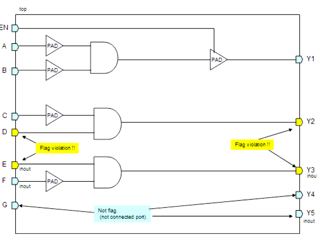
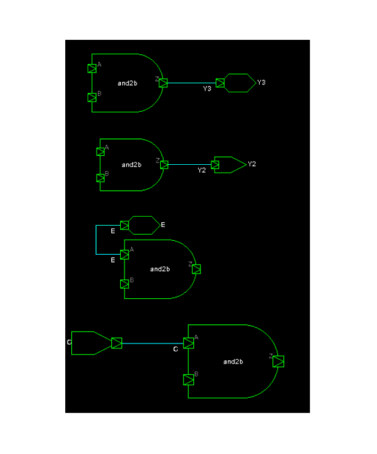

Description
This rule fires when LEDA detects primary ports (in, out, inout) in top module that are not connected to I/O PAD cell. Floating ports will be ignored in this check.
Argument: %s1 is the hierarchy name of the illegal port.
Policy
DESIGN
Ruleset
PAD
Language
VHDL/Verilog
Type
Hardware
Severity
Error
module top (A,B,C,D,E,F,G,EN,Y1,Y2,Y3,Y4,Y5); input A,B,C,D,G,EN; inout E,F; output Y1,Y2; inout Y3,Y4,Y5; GTECH_INBUF U0 (.PAD_IN(A), .DATA_IN(n1) ); GTECH_INBUF U1 (.PAD_IN(B), .DATA_IN(n2) ); AN2 U2 (.A(n1), .B(n2), .Z(n3)); GTECH_OUTBUF U3 (.DATA_OUT(n3), .OE(EN), .PAD_OUT(Y1) ); GTECH_INBUF U4 (.PAD_IN(D), .DATA_IN(n4) ); AN2 U5 (.A(C), .B(n4), .Z(Y2)); GTECH_INBUF U6 (.PAD_IN(F), .DATA_IN(n5) ); AN2 U7 (.A(E), .B(n5), .Z(Y3)); endmoduleConfiguration
rule_deselect -all rule_select -policy DESIGN -rule NTL_PAD15Case schematic
Violations
2: input A,B,C,D,G,EN;
^
pad15_case1.v:2: PAD> [ERROR] NTL_PAD15: Primary ports must be connected
to PAD cell top.C
3: inout E,F;
^
pad15_case1.v:3: PAD> [ERROR] NTL_PAD15: Primary ports must be connected
to PAD cell top.E
4: output Y1,Y2;
^
pad15_case1.v:4: PAD> [ERROR] NTL_PAD15: Primary ports must be connected
to PAD cell top.Y2
5: inout Y3,Y4,Y5;
^
pad15_case1.v:5: PAD> [ERROR] NTL_PAD15: Primary ports must be connected
to PAD cell top.Y3
Violation schematic